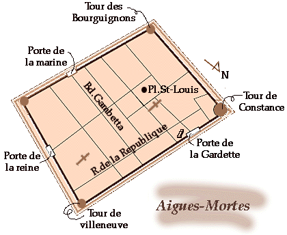

この町の名前はどこかで聞いた覚えがあるぞ、と思われる方はかなりの世界史通です。この町が世界史の舞台に現れてくるのは、１３世紀初頭、遠くパレスチナの地に第７次十字軍を派遣したルイ９世の時代です。
フランス国王ルイ９世は、十字軍派遣の計画をおし進め、ただの漁村だったこの土地を獲得し、城壁を築き、自由権証書、免税、通商特権を与え、この町に人々を集めた。 １２４８年、ヴェネツィアとジェノバで雇われた大艦隊はここに集まり、キプロス島をめざして出港した。聖王ルイは２度目の遠征にてこの地よりチュニスに向かい、かの地で客死している。次に、歴史の舞台に顔をだすのは百年戦争の時代。１４１８年、ブルゴーニュ派がエーグモルトを急襲し略奪した。が、しかし、対するアルマニャック派に味方するバルティザンの働きによって町の奪回に成功した。戦いに敗れた人の死人が多かったため、焼却するまでのあいだ、塔に放り込み塩漬けにした。それ以降、「塩漬けの人」という表現が生まれた。なんともコワーイお話。
エーグモルトは１４世紀半ばまで繁栄を続けたが、カマルグ地方に流れ込むローヌ川の砂の堆積によってしだいに海が遠のき水路がとだえたことによって、活動が衰退していった。
| レストランLa Goulue |
これは何でしょう？エーグモルト編 |
